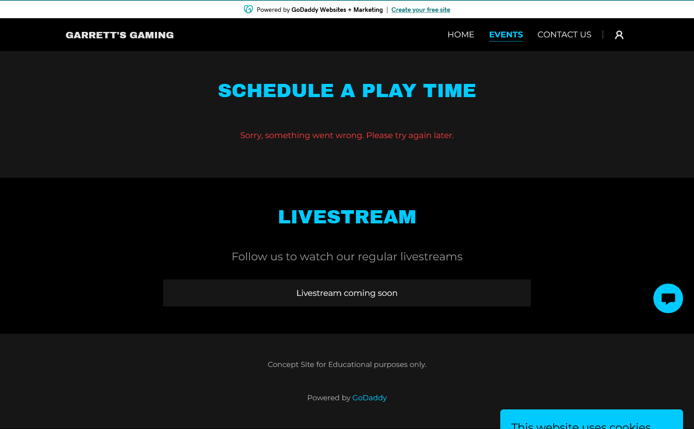

BACK

Prototype Gaming Website Article
For Garrett's Gaming prototype website, I primarily was focused on learning how to utilize the content management system Godaddy. I utilized colors along with images and video footage that meshed with the aesthetic of gaming which is a dark backdrop with neon colors. I utilized a mixture of columns to give an aesthetically diverse organization look to the content.
For the scheduling and live stream page, I went with a page that has integrated calendar support along with a fixed schedule for streams. I wanted to keep this page simple since it's primarily a page the user will not stay on for a long time since it is used for reaching other locations.
The contact page was made with center alignment in mind due to keep the information and flow in a neat and orderly fashion. With a button leading to the different ways to get in touch with the Garrett Gaming organization such as by email. The subheaders were kept white so they still attracted attention while not rivaling the main headers or over-utilizing the neon blue within the text body.